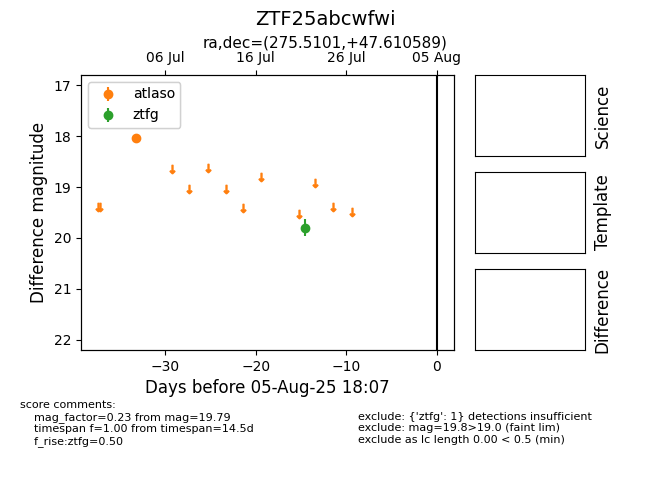

Target ZTF25abcwfwi at 2025-08-06 17:27, see:
FINK: fink-portal.org/ZTF25abcwfwi
Lasair: lasair-ztf.lsst.ac.uk/objects/ZTF25abcwfwi
ALeRCE: alerce.online/object/ZTF25abcwfwi
alt names
ZTF25abcwfwi (ztf,fink)
coordinates:
equatorial (ra, dec) = (275.5101,+47.61059)
galactic (l, b) = (75.6787,+24.42691)
photometry
last atlaso=18.03, ztfg=19.79
1 atlaso, 1 ztfg detections
